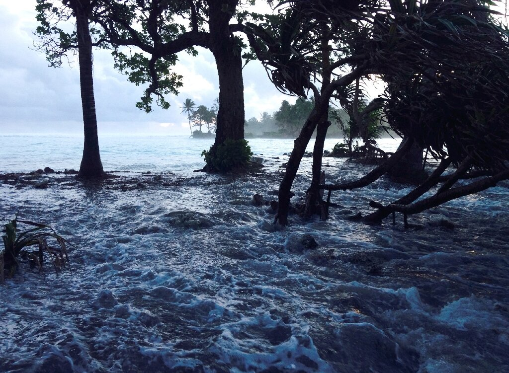

Future Outcomes
Predictions of the rise in sea level around the Marshall Islands.
Sea level is expected to continue to rise in the Marshall islands. These sea-level rises
compounded with the natural year-to year changes will impact the amount of storm surges and flooding
in the area. Even with these predictions it is still uncertain how the large melting ice sheets will
contribute to the sea level rise and if these predictions are rather low for our future. The fast pace global
temperature rise could skyrocket these numbers and we might loose some of these atolls in the Marshall islands
sooner than we thought.
